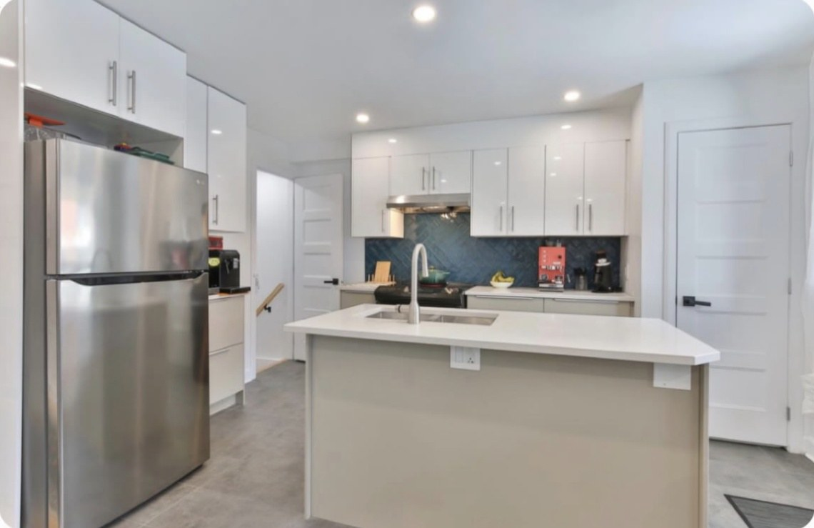
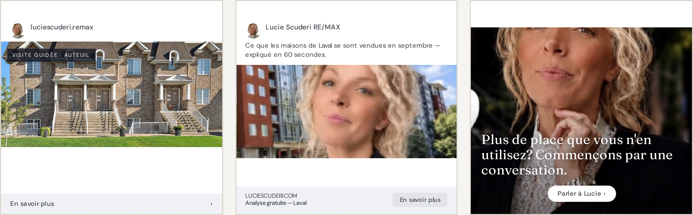
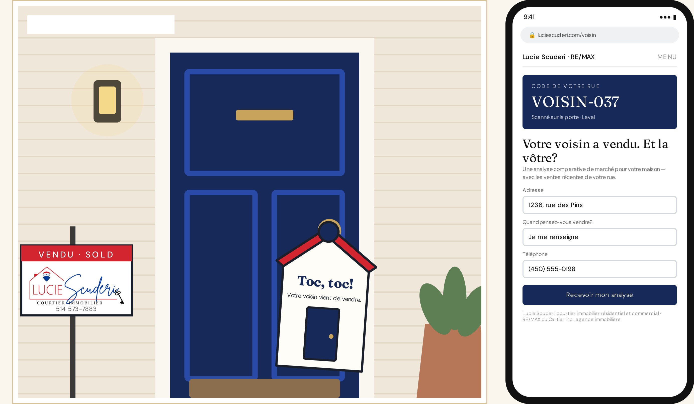
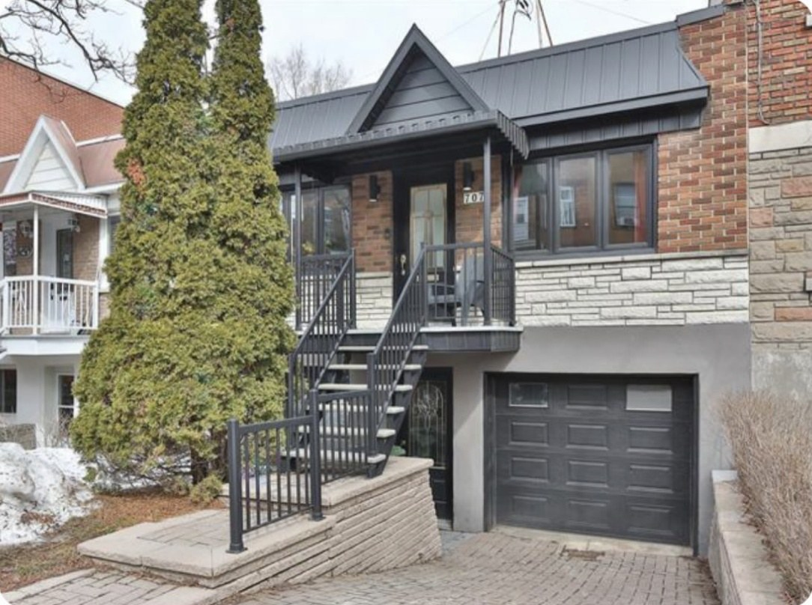
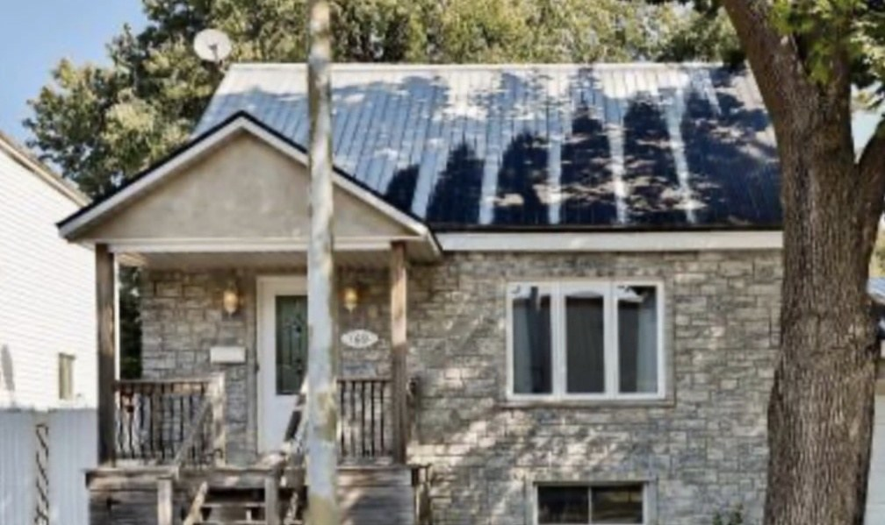
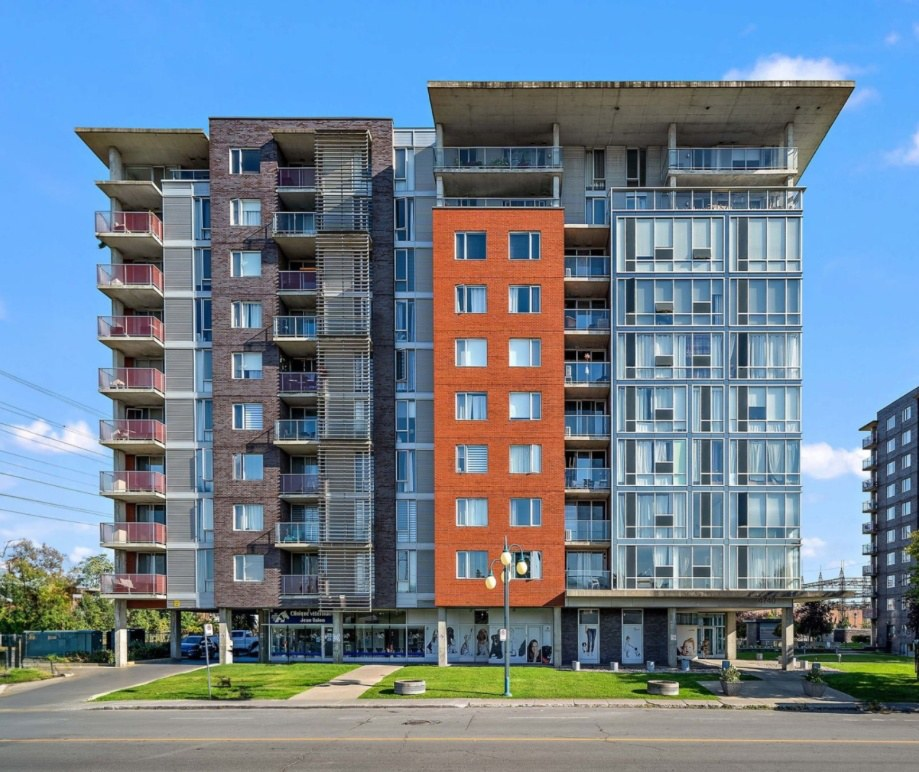
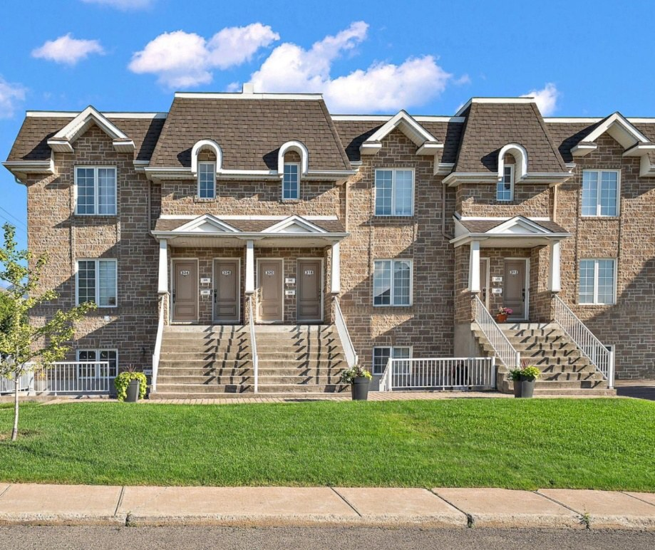
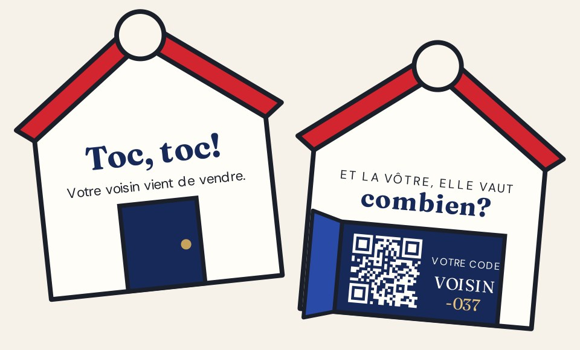

COURTIER IMMOBILIER RÉSIDENTIEL & COMMERCIAL — RE/MAX DU CARTIER · MONTRÉAL · LAVAL
Stratégie de croissance
Vingt ans de clés remises à Montréal et à Laval — une courtière du Temple de la renommée RE/MAX, notée 4,9★ par les gens qui ont vendu avec elle. Un plan pour que les prochains propriétaires rencontrent Lucie avant de décider de vendre — et que ça se transforme en rendez-vous d’inscription chaque semaine.
Chaque maison est unique. Ma stratégie l’est aussi.
×
SEPTEMBRE 2026MANDAT OCT. – DÉC.TGS · 111 CHABANEL OUEST, MONTRÉAL

L’occasion
Scuderi×TGS
Elle élève les standards. Laval doit la rencontrer.
Courtière résidentielle et commerciale depuis plus de vingt ans et membre du Temple de la renommée RE/MAX — bilingue, formée pour accompagner les aînés dans un déménagement, et notée 4,9★ sur Google par des clients qui la nomment. Sa propre phrase le dit : « J’élève les standards… et ça dérange. »
Les propriétaires choisissent leur courtier bien avant de l’appeler — dans un fil d’actualité, sur une pancarte ou par l’histoire d’un voisin. Le plan : mettre Lucie devant la caméra, filmer ses inscriptions, et transformer les deux en publicités qui génèrent des demandes d’évaluation sur Instagram et Facebook.
Rien ne doit changer dans la façon dont Lucie travaille. Ce qui doit changer, c’est le nombre de propriétaires qui ont vu son travail avant de décider de vendre.
Personne ne confie sa maison à un courtier qu’il n’a jamais rencontré.
NOTRE TRAVAIL : PRÉSENTER LUCIE
Territoire
Laval · Saint-Léonard · Mercier · l’est de Montréal — et plus de 40 municipalités autour
Google
Note de 4,9★, plus de 45 avis déjà écrits
Distinctions
Temple de la renommée RE/MAX · RE/MAX Commercial · Engagée Réflexe Aîné
Spécialités
Maisons, condos et plex, commercial, transitions vers plus petit et successions
PRÉPARÉ POUR LUCIE SCUDERI — STRATÉGIE DE CROISSANCE DES INSCRIPTIONS
02
01 — L’objectifScuderi×TGS
L’objectif SMART
Un seul objectif derrière chaque vidéo, chaque campagne et chaque rapport.
L’objectif, en une ligne
Obtenir plus d’inscriptions à Montréal et à Laval, transformer des années de « on devrait vendre un jour » en rencontres autour de la table de cuisine avec Lucie, et relier chaque inscription signée à la campagne qui l’a amenée.
Le plan en un coup d’œil
S
Spécifique — des propriétaires, là où elle vend
Des propriétaires à Laval — Duvernay, Auteuil, Vimont — et dans l’est de Montréal — Saint-Léonard, Mercier, Anjou — qui prévoient vendre d’ici trois à douze mois : pour acheter plus grand, pour réduire, ou pour régler la maison d’un parent.
M
Mesurable — demandes, rendez-vous, inscriptions
Quatre chiffres clés : les demandes d’évaluation issues des campagnes, le coût par demande, les rendez-vous d’inscription obtenus, et les inscriptions signées à partir de ces demandes.
A
Atteignable — bâti sur ce qui existe
Plus de vingt ans de ventes, le Temple de la renommée RE/MAX, une note Google de 4,9★, un Instagram vérifié, la formation Réflexe Aîné et un site Web où chaque inscription est déjà en ligne.
R
Réaliste — une inscription vaut des mois
Une seule inscription signée peut couvrir plus d’un mois de ce mandat — et chaque vendeur est un futur acheteur et la source de la prochaine recommandation.
T
Temporel — d’octobre à décembre
Trois mois, révisés chaque mois — des inscriptions d’automne signées maintenant, et des rendez-vous pour le marché du printemps réservés avant les Fêtes.
Ce à quoi nous nous engageons. Le contenu, les campagnes, le suivi et les rapports, c’est nous. Ce qui se passe à la table de cuisine — l’analyse de marché, le prix demandé, la signature — est mesuré, pas promis.
Filmer les inscriptions→Lancer 4 campagnes→Demande d’évaluation→Rendez-vous→Inscription signée
Préparé pour Lucie Scuderi — Stratégie de croissance des inscriptions
03
02 — Le parcours du vendeurScuderi×TGS
Du fil au « Vendu »
Vendre une maison n’est pas un coup de tête — c’est une année de « peut-être le printemps prochain » avant un seul appel. Le plan couvre tout le cycle, pas un seul clic.
Chaque vente
AMÈNE LA PROCHAINE INSCRIPTION
On le voit
Un propriétaire voit défiler la visite d’une maison de son coin de Laval — ou Lucie qui explique combien se sont vendues les maisons de sa rue.
On demande
On touche « Combien vaut ma maison? » et on arrive sur la page d’évaluation de Lucie — adresse, échéancier, téléphone, envoyé en moins d’une minute.
Vendu et recommandé
La pancarte se pose, les clés changent de mains — et le voisin qui a tout vu est le prochain à appeler.
La table de cuisine
Lucie rappelle, puis vient avec les ventes comparables. Elle fait ce que vingt ans lui ont appris à bien faire.
C’est mesuré
Chaque demande sur son site est reliée à la campagne, au placement et à la pub qui l’ont lancée.
Lucie est l’avantage. La plupart des pubs de courtiers, c’est une photo, un logo et un numéro de téléphone. Vingt ans de ventes, une plaque du Temple de la renommée, une note de 4,9★ de clients qui la nomment dans leurs avis, et une courtière à qui l’on confie les dossiers délicats — successions, réductions, une recherche de 60 visites depuis Toronto — c’est une preuve qu’aucun concurrent ne peut copier. Chaque maison est unique. Le contenu le montre.
Préparé pour Lucie Scuderi — Stratégie de croissance des inscriptions
04
03 — De la pub à la demandeScuderi×TGS
De la pub à la table de cuisine
Ce qu’un propriétaire de Laval voit, touche et remplit — en moins d’une minute — sur Instagram ou Facebook.
Accueil
Accueil
Commandité
Commandité
1Voir la pub
Une visite de 40 secondes d’une maison que Lucie vient de vendre dans le coin apparaît entre les publications d’amis et de la famille.
2Toucher « En savoir plus »
Un seul toucher ouvre son site — pas de messages privés, pas d’appels manqués pendant les heures de travail.
3Envoyer la demande
Une nouvelle page d’évaluation sur son site, suivie par le pixel Meta. La demande arrive sur le téléphone de Lucie dès qu’elle est envoyée.
Même système, trois placements — une seule page d’évaluation

Fil Instagram
Fil Facebook
Stories Instagram
Commandité
Commandité
Pub affichée→« En savoir plus »→Page d’évaluation→Demande envoyée→Attribuée à la pub
Préparé pour Lucie Scuderi — Stratégie de croissance des inscriptions
05
The Golden Standard · Dans la rueScuderi×TGS
PREMIUM · EXCLUSIF À THE GOLDEN STANDARD · 4 000 $ / MOIS
Toc, toc. Une rue à la fois.
Après chaque nouvelle inscription et chaque vente, 25 accroche-portes en forme de maison sont posés dans les rues voisines. La petite porte s’ouvre sur : « Votre voisin vient de vendre. Curieux de savoir combien vaut la vôtre? » — avec un code propre à cette rue.

EXEMPLE · UNE RUE DE LAVAL
01
Vendu, puis filmé
Chaque nouvelle inscription et chaque vente ont droit à une « histoire de rue » de 30 secondes — la maison, la rue, Lucie sur le perron — avec l’accord écrit du vendeur.
02
25 portes, une rue
TGS pose 25 accroche-portes dépliants dans les rues voisines dans la semaine. La petite porte s’ouvre sur l’invitation et un code QR.
03
Scanné, rue par rue
Chaque rue a son propre code, à partir de VOISIN-001 — vous voyez exactement quelles rues ont donné des demandes d’évaluation et des rendez-vous d’inscription.
La campagne derrière. L’une des quatre campagnes The Golden Standard roule en parallèle : l’histoire de rue montrée aux propriétaires de ce secteur de Laval, et une mise à jour mensuelle des « portes cognées jusqu’ici ». Aucun prix ni adresse sans le consentement écrit du vendeur, jamais sur une porte marquée « pas de circulaires », et jusqu’à quatre rues par mois.
Préparé pour Lucie Scuderi — Stratégie de croissance des inscriptions
06
04 — Le public cibleScuderi×TGS
À qui on s’adresse
Trois vendeurs — tous propriétaires à Laval — rejoints chacun différemment.
La famille qui s’agrandit
Le condo d’Auteuil ou le jumelé de Vimont est devenu trop petit. Doit vendre et acheter dans le bon ordre — sans payer deux hypothèques ni déménager deux fois.
Où la rejoindre : Reels Instagram, visites d’inscriptions, « acheter ou vendre en premier? », guides de quartier

Ceux qui réduisent
Vingt-cinq ans dans le même bungalow; les enfants sont partis. Veulent un processus sans pression, une courtière qui écoute, et de l’aide pour la suite.
Où les rejoindre : fil Facebook, vidéos « le prochain chapitre », l’approche Réflexe Aîné de Lucie

Le liquidateur de la famille
Règle la maison d’un parent, souvent à distance. A besoin de quelqu’un pour coordonner le notaire, l’inspecteur et le grand ménage — avec patience et douceur.
Où le rejoindre : fil Facebook, contenu « vendre la maison d’un parent », reciblage des visiteurs du site
CE QUI COMPTE POUR EUX
Savoir ce que la maison vaut vraiment
Une courtière qui rappelle — le jour même
Vendre et acheter sans déménager deux fois
Quelqu’un qui gère le plus dur, en français ou en anglais
OÙ ON LES REJOINT
Fil, Reels et Stories Instagram
Fil Facebook, partout à Laval
Un toucher de la pub à sa page d’évaluation
Reciblage des spectateurs et des visiteurs du site
Pourquoi la vidéo fonctionne ici
Votre fil actuel, ce sont des visuels soignés, fidèles à la marque — ils disent qui vous êtes, mais personne ne peut vous entendre. Et les règles de Meta sur le logement interdisent de cibler les pubs immobilières par âge : c’est donc le contenu qui fait le ciblage — une vidéo « prochain chapitre » trouve ceux qui réduisent, une visite d’inscription trouve la famille qui s’agrandit.
Préparé pour Lucie Scuderi — Stratégie de croissance des inscriptions
07
05 — Le contenuScuderi×TGS
Ce qu’on va créer
20 contenus par mois — 12 vidéos, 8 publications — filmés avec Lucie et dans ses inscriptions, sous-titrés en français et en anglais.

INSCRIPTIONS, FILMÉES
RENCONTREZ LUCIE

CONNAÎTRE SON QUARTIER
Chaque maison filmée avec le consentement écrit du vendeur — aucune personne ni adresse à l’écran sans lui.
Inscriptions, filmées
4 / MOIS
Chaque inscription en visite de 40 secondes — la lumière, la circulation, la rue — plus l’histoire de chaque vente.
À vendre, en visiteLe survol en droneToc, toc : l’histoire de rue
Rencontrez Lucie
4 / MOIS
La courtière qui élève les standards — qui elle est, comment elle négocie, et les histoires derrière les clés.
20 ans, Temple de la renomméeLa négociation, expliquée60 visites, une maison
Connaître son quartier
4 / MOIS
Laval et l’est de Montréal, quartier par quartier — les parcs, les écoles, les cafés, et le prix auquel les maisons s’y vendent.
Vivre à DuvernayVivre à Saint-LéonardPortes cognées jusqu’ici
Vendre intelligemment
4 / MOIS
Prix, moment et préparation — expliqués simplement, chacun relié à la page d’évaluation.
Le marché de Laval, chaque moisLe bon prixCinq correctifs avant d’inscrire
Le prochain chapitre
4 / MOIS
Réductions, successions et grandes transitions — les déménagements que la plupart des courtiers bâclent, et pour lesquels Lucie est formée.
Réduire, sans se presserVendre la maison d’un parentAcheter ou vendre en premier?
Préparé pour Lucie Scuderi — Stratégie de croissance des inscriptions
08
06 — Le calendrier de contenu · Mois 1Scuderi×TGS
Octobre 2026
20 contenus par mois — 12 vidéos, 8 publications — du lundi au vendredi. La bande au-dessus de chaque semaine indique la campagne que ce contenu alimente.
Inscriptions, filméesRencontrez LucieConnaître son quartierVendre intelligemmentLe prochain chapitreToc, toc · Golden Standard
LUNDIMARDIMERCREDIJEUDIVENDREDI
Semaine 1A · Toc, toc — Lancement · la première rue, porte à portePropriétaires du voisinage
1 oct.VIDÉO
J’élève les standards
Qui est Lucie, en 40 secondes
2 oct.VIDÉO
Toc, toc
25 portes, une rue — l’accroche-porte s’ouvre
Semaine 2B · Combien vaut ma maison? — Demandes · Instagram et Facebook vers la page d’évaluationFamilles · tous les vendeurs
5 oct.VIDÉO
À vendre, en visite
De la porte à la cour en 40 secondes
6 oct.PUBLICATION
Le marché de Laval, septembre
Carrousel : prix, délais de vente
7 oct.VIDÉO
Vivre à Duvernay
Parcs, écoles, la rivière
8 oct.VIDÉO
La négociation, expliquée
Ce qui se passe après une offre
9 oct.PUBLICATION
Acheter ou vendre en premier?
L’ordre qui évite un déménagement
Semaine 3C · Le prochain chapitre — Demandes · réductions et successionsCeux qui réduisent · liquidateurs
12 oct.
Action de grâce
Congé · aucune publication
13 oct.VIDÉO
Réduire, sans se presser
Par où commencer, et quand
14 oct.VIDÉO
Le survol en drone
Une inscription, vue d’en haut
15 oct.PUBLICATION
Le bon prix
Pourquoi les deux premières semaines comptent
16 oct.VIDÉO
Vendre la maison d’un parent
Le notaire, le grand ménage, le moment
Semaine 4D · Encore indécis — Reciblage · spectateurs, profil et visiteurs du siteLes trois
19 oct.VIDÉO
Vivre à Saint-Léonard
Ce que les familles y aiment
20 oct.PUBLICATION
Cinq correctifs avant d’inscrire
Une fin de semaine, pas une rénovation
21 oct.VIDÉO
60 visites, une maison
De Toronto à Montréal, la recherche
22 oct.PUBLICATION
Condo ou bungalow après 60 ans?
Les vrais compromis
23 oct.VIDÉO
Vendu : l’histoire de rue
Les clés, le perron, les voisins
Semaine 5La meilleure campagne amplifiée — Les quatre actives · le budget suit les rendez-vousLes trois
26 oct.VIDÉO
Vivre à Sainte-Rose
Vieux village, nouvelles familles
27 oct.PUBLICATION
Portes cognées jusqu’ici
Les rues visitées en octobre
28 oct.PUBLICATION
Combien ça vaut, vraiment?
Comment se bâtit une analyse de marché
29 oct.PUBLICATION
L’équipe de Lucie
Le notaire, l’inspecteur, le prêteur qu’elle appelle
30 oct.
Rapport mensuel
Résultats d’octobre et plan de novembre
Conçu pour les règles de l’OACIQ. Chaque contenu est vérifié avant d’être publié : le titre de permis de Lucie et « RE/MAX du Cartier inc., agence immobilière » sur chaque pub, aucun prix de vente ni adresse sans le consentement écrit du vendeur, des données de marché sourcées et datées, des témoignages de clients seulement avec consentement écrit, et une copie de chaque pub conservée au dossier. Toutes les pubs roulent dans la catégorie Logement de Meta.
Préparé pour Lucie Scuderi — Stratégie de croissance des inscriptions
09
07 — Les campagnesScuderi×TGS
Des campagnes tirées du contenu
Chaque vidéo du calendrier devient aussi une pub sur Instagram ou Facebook. Ce qui performe reçoit le budget, et chaque clic arrive sur sa page d’évaluation — le coût de chaque rendez-vous d’inscription est donc suivi dès le premier jour.
A · GOLDEN STANDARD
Toc, toc
Accroche-portes · Reels Instagram · fil Facebook
Public : propriétaires autour de chaque inscription
L’histoire de rue de chaque inscription et de chaque vente, montrée aux propriétaires de ce secteur de Laval — pendant que 25 accroche-portes sont posés sur les portes voisines.
Mesuré par : balayages par rue, demandes d’évaluation
B · VEDETTE · LES DEUX FORFAITS
Combien vaut ma maison?
Fils Instagram et Facebook
Public : propriétaires de Laval
Visites d’inscriptions, mises à jour du marché et pubs « ce que votre rue s’est vendue » avec un bouton qui ouvre sa page d’évaluation — les demandes vont directement sur le téléphone de Lucie.
Mesuré par : demandes d’évaluation, coût par demande
C · LE PROCHAIN CHAPITRE
Réductions et successions
Fil Facebook · Stories Instagram
Public : ceux qui réduisent et les liquidateurs
Des vidéos calmes et utiles sur la réduction et la vente de la maison d’un parent — qui mènent à une conversation avec Lucie, pas à un discours de vente.
Mesuré par : consultations, coût par consultation
D · RECIBLAGE
Encore indécis
Instagram et Facebook · tous les placements
Public : tous ceux qui ont interagi
Ceux qui ont regardé, visité son profil ou ouvert la page d’évaluation sans l’envoyer voient Lucie, ses résultats et sa démarche, puis l’invitation.
Mesuré par : rendez-vous d’inscription, coût par rendez-vous
Trois mois, trois priorités
OCTOBRE
Bâtir le système
Page d’évaluation et pixel, demandes acheminées au téléphone de Lucie, les premiers tournages — et le point de départ de toutes les mesures.
NOVEMBRE
Vendre avant la neige
Inscriptions d’automne et mises à jour du marché pendant que les acheteurs sont encore actifs. Le budget va à la campagne qui obtient le plus de rendez-vous.
DÉCEMBRE
Réserver le printemps
Rendez-vous d’inscription réservés pour janvier à mars — le reciblage porte les Fêtes, quand les gens planifient leur prochain déménagement.
Ce que vous voyez chaque mois
DEMANDES D’ÉVALUATION
—
point de départ en octobre
RENDEZ-VOUS OBTENUS
— %
des demandes, à votre agenda
COÛT PAR DEMANDE
— $
par campagne et placement
INSCRIPTIONS SIGNÉES
—
issues des demandes des campagnes
Les pubs sont déjà payées. Le budget publicitaire est inclus dans votre forfait mensuel — pas de facture Meta à part, pas de recharge surprise. Vous restez propriétaire de chaque page, compte et séquence vidéo.
Préparé pour Lucie Scuderi — Stratégie de croissance des inscriptions
10
08 — Le mandatScuderi×TGS
Deux façons de grandir
Les mêmes 20 contenus par mois dans les deux cas — et le budget publicitaire est déjà dans le prix, donc pas de deuxième facture de Meta. La différence : jusqu’où le contenu se rend.
STANDARD
3 000 $/ MOIS
20 CONTENUS · 1 CAMPAGNE VEDETTE
● BUDGET PUB INCLUS
Tout ce qu’un propriétaire doit voir — et une campagne pour le montrer aux bonnes personnes.
20 contenus par mois — 12 vidéos, 8 publications
Sous-titres en français et en anglais, registre québécois
1 campagne vedette par mois — demandes d’évaluation
Pixel Meta sur sa page d’évaluation, chaque demande suivie
Chaque contenu vérifié selon les règles de l’OACIQ
Rapport mensuel
Campagnes additionnelles, reciblage et accroche-portes
THE GOLDEN STANDARD · RECOMMANDÉ
4 000 $/ MOIS
20 CONTENUS · 4 CAMPAGNES · TOC, TOC
● BUDGET PUB INCLUS
À la hauteur de ses standards — tout le forfait Standard, plus une campagne de rue dont les voisins parlent.
20 contenus par mois — 12 vidéos, 8 publications
Sous-titres en français et en anglais, registre québécois
1 campagne vedette par mois — demandes d’évaluation
Pixel Meta sur sa page d’évaluation, chaque demande suivie
Chaque contenu vérifié selon les règles de l’OACIQ
Rapport mensuel
PLUS
3 campagnes de plus — Toc, toc, prochain chapitre, reciblage
Revue hebdomadaire des demandes avec Lucie
25 accroche-portes après chaque inscription et vente ↓
EXCLUSIF À THE GOLDEN STANDARD · 4 000 $ / MOIS

Toc, toc — rue par rue
Des accroche-portes en forme de maison avec une petite porte qui s’ouvre. Après chaque nouvelle inscription et chaque vente, 25 sont posés dans les rues voisines — chaque rue avec son code, chaque balayage compté.
25 accroche-portes par rue, conçus, imprimés et posés par TGS
Une campagne dédiée : l’histoire de rue, les mises à jour, les partages
Chaque balayage suivi, de la porte au rendez-vous
30JOURS
CLAUSE DE SATISFACTION · LES DEUX FORFAITS
Pas satisfaite après le premier mois? Vous partez.
Si le premier mois ne répond pas à vos besoins, mettez fin à l’un ou l’autre forfait par avis écrit avant le début du deuxième mois — sans pénalité ni frais, et les mois deux et trois ne sont jamais facturés. Vous ne payez que le mois livré, et vous gardez chaque vidéo, publication et compte mis en place.
Préparé pour Lucie Scuderi — Stratégie de croissance des inscriptions
11
09 — Prochaines étapesScuderi×TGS
La suite
Six étapes jusqu’à la première inscription attribuée à une campagne.
01
Choisir le forfait, partager le point de départ
Standard ou The Golden Standard. Puis, à peu près combien d’inscriptions vous signez par année, d’où elles viennent aujourd’hui — recommandations, pancartes, Centris — et combien de demandes d’évaluation vous recevez par mois.
02
Donner les accès
Meta Business Manager, le compte publicitaire, @luciescuderi.remax et votre page Facebook, et votre site Web pour la nouvelle page d’évaluation et le pixel — ou on héberge la page pour vous si le site RE/MAX ne le permet pas.
03
Confirmer les inscriptions et les rues
Quelles inscriptions on filme en premier, le consentement écrit des vendeurs pour montrer leur maison, et les premières rues pour les accroche-portes.
04
Établir la règle de rappel
Qui rappelle les demandes d’évaluation et en combien de temps — la première heure, c’est quand un vendeur choisit encore. Le budget publicitaire est déjà couvert par votre forfait.
05
Réserver les premiers tournages
Une demi-journée avec Lucie devant la caméra ce mois-ci, plus chaque inscription en cours — filmée autour des visites, avec l’accord des vendeurs.
06
Approuver le calendrier d’octobre
Approuver le mélange pour que la production et les premières campagnes démarrent le 1er.
On se déplace. Les tournages se font autour de vos visites et signatures — tôt le matin ou entre deux rendez-vous — pour qu’aucun client n’attende la caméra. Laval et l’est de Montréal sont à quelques minutes de notre studio sur Chabanel.
TGS Visuals / Productions
pour Lucie Scuderi — RE/MAX du Cartier · Montréal · Laval